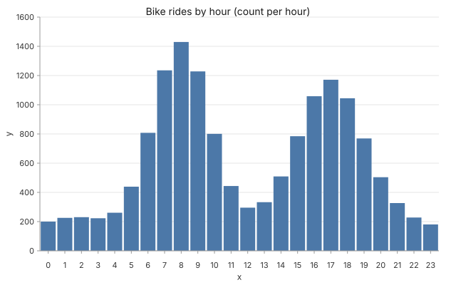

For @hadleywickham
Hadley Wickham, this is for you
Grammar of graphics for AI agents. The same compositional shape ggplot2 introduced, expressed as JSON so an LLM can author it directly.

Grammar of graphics, declared in JSON. data + layers + encoding. The same compositional shape as ggplot2 — but written by an LLM as JSON, not by a human as R.
Why I'm sending this
Glyph is an attempt to take the grammar-of-graphics idea and apply it to the agent-authoring world. The spec is JSON (validated by Zod), the data shapes include tabular + function + ODE + PDE, and the output is byte-stable SVG. We'd be honoured by any feedback on whether the grammar holds up — docs/LEARN.md is the 30-minute tour.
Two more, while you're here


If you have 60 seconds
Paste this into Claude (or any MCP client with Glyph installed via claude mcp add glyph -- npx -y @glyph/mcp):
Show me Glyph's grammar of graphics in one example: faceted bar chart of rides by hour, broken out by day-of-week, with a color encoding for weekday-vs-weekend. Print the spec. — for Claude / Cursor / Codex / any MCP client